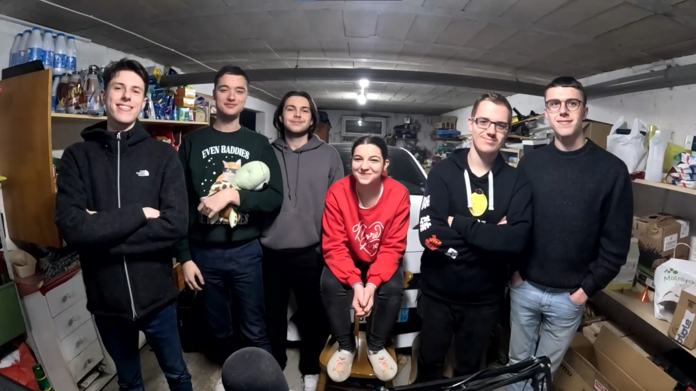

Découvrez l'univers des LAN parties entre amis : Fun, jeux vidéo, amis et compétitions !
Une LAN party, c'est un événement où des amis se réunissent pour jouer ensemble à des jeux vidéo en réseau local. En général l'endroit choisi est le salon ou le garage d'un entre eux. C'est l'occasion parfaite de se retrouver entres amis, et faire une activité que tout le monde adore. Les LAN parties sont là pour créer des souvenirs inoubliables❤️.
Un classique des FPS compétitifs. Travaillez en équipe pour remporter la victoire.
Un jeu stratégique en équipe, où la communication est la clé pour dominer.
Un FPS connu aussi, même principe que CS:GO deux équipes de 5 joueurs s'opposent. L'une doit poser un spike sur un site, l'autre doit tout faire pour les en empêcher. A la différence de CS:GO, vous avez des abilités pour vous battre.
Créez, explorez, et survivez ensemble dans un monde infini de blocs.